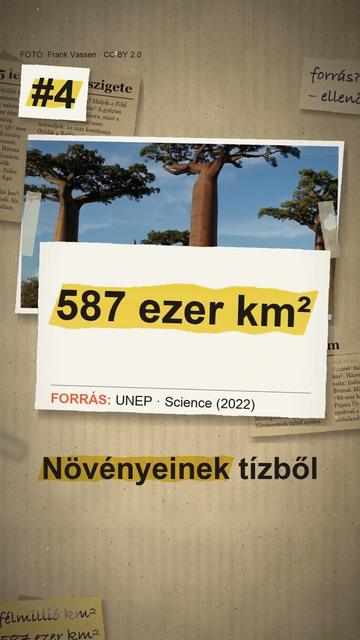

Megnézem a YouTube-onA világ 5 legnagyobb szigete
Röviden: A rangsor terület szerint áll; Ausztrália kontinens, ezért nem szerepel. A források kissé eltérnek, a narráció kerekít.
A rangsor terület szerint áll; Ausztrália kontinens, ezért nem szerepel. A források kissé eltérnek, a narráció kerekít. 1. Grönland: 2 166 086 km², ennek mintegy 81 %-át jég borítja (Grönlandi Statisztikai Hivatal). 2. Új-Guinea: 785 753 km²; keleti felén fekszik Pápua Új-Guinea, a maga 840 élő nyelvével a világ legtöbbnyelvű országa. 3. Borneó: 748 168 km², Indonézia, Malajzia és Brunei osztozik rajta. 4. Madagaszkár: 587 713 km²; őshonos edényes növényfajainak 82 %-a sehol máshol nem él. 5. Baffin-sziget (Kanada): 507 451 km², több mint ötször akkora, mint Magyarország (93 023 km²). A hatodik, Szumátra 443 066 km²-rel már jóval lemarad.
Az összes rész forrásokkal: https://valoban.pages.dev/
Források
- UNEP Island Directory (1991): Islands by land area
- Statistics Greenland: Geography
- Statistics Canada / Atlas of Canada: Selected major sea islands
- Magyarország Nemzeti Atlasza, 1. kötet
- Queen Mary University of London (EurekAlert!, 2022): Madagascar's biodiversity
- Our World in Data (Ethnologue): Papua New Guinea languages
- Heart of Borneo (Sarawak)
7 forrás · Hogyan ellenőrzünk?
Hibát találtál? Írd meg nekünk, megnézzük.
Képek és kreditek
• Grönland a világűrből – NASA / Ames Research Center, Public domain (https://creativecommons.org/publicdomain/mark/1.0/) https://commons.wikimedia.org/?curid=144368
• Ausztrália északi csücske, a York-félsziget műholdképen – NASA image created by Jesse Allen, Earth Observatory, using data obtained from the Goddard Earth, Public domain (https://creativecommons.org/publicdomain/mark/1.0/) https://commons.wikimedia.org/?curid=192674201
• Új-Guinea és alatta Ausztrália a világűrből – NASA/Robert Simmon and Reto Stöckli, Public domain (https://creativecommons.org/publicdomain/mark/1.0/) https://commons.wikimedia.org/?curid=20711247
• a Baffin-sziget műholdképen, 2016 nyarán – NASA, Public domain (https://creativecommons.org/publicdomain/mark/1.0/) https://commons.wikimedia.org/?curid=50271956
• az Auyuittuq Nemzeti Park a Baffin-szigeten – Mike Beauregard from Nunavut, Canada, CC BY 2.0 (https://creativecommons.org/licenses/by/2.0/) https://commons.wikimedia.org/?curid=23225708
• Madagaszkár műholdképen, 2018 – MODIS Land Rapid Response Team, NASA GSFC, Public domain (https://creativecommons.org/publicdomain/mark/1.0/) https://commons.wikimedia.org/?curid=145434402
• a Baobab-sor Morondava mellett (2010) – Frank Vassen, CC BY 2.0 (https://creativecommons.org/licenses/by/2.0/) https://commons.wikimedia.org/?curid=14462282
• Borneó a világűrből – NASA, MODIS Rapid Response System, Public domain (https://creativecommons.org/publicdomain/mark/1.0/) https://commons.wikimedia.org/?curid=19435619
• síkvidéki esőerdő a Danum-völgyben, Borneó malajziai részén – Iacobndg, CC0 (https://creativecommons.org/publicdomain/zero/1.0/) https://commons.wikimedia.org/?curid=200063245
• Új-Guinea hegyvidéke műholdképen, 2002 – NASA: JPL, Public domain (https://creativecommons.org/publicdomain/mark/1.0/) https://commons.wikimedia.org/?curid=10379239
• a Piora-hegy, Pápua Új-Guinea (1963 körül) – Carlquist, Sherwin John, 1930–2021, CC BY 4.0 (https://creativecommons.org/licenses/by/4.0/) https://commons.wikimedia.org/?curid=189117925
• gleccserfront Grönlandon – NASA's Earth Observatory, Public domain (https://creativecommons.org/publicdomain/mark/1.0/) https://commons.wikimedia.org/?curid=68986386
• Dél-Grönland műholdképen, 2015 – Jeff Schmaltz, MODIS Land Rapid Response Team, NASA GSFC, Public domain (https://creativecommons.org/publicdomain/mark/1.0/) https://commons.wikimedia.org/?curid=145365855
A képek módosítva: 9:16-ra kivágva, átméretezve, kameramozgással, ráégetett felirattal.